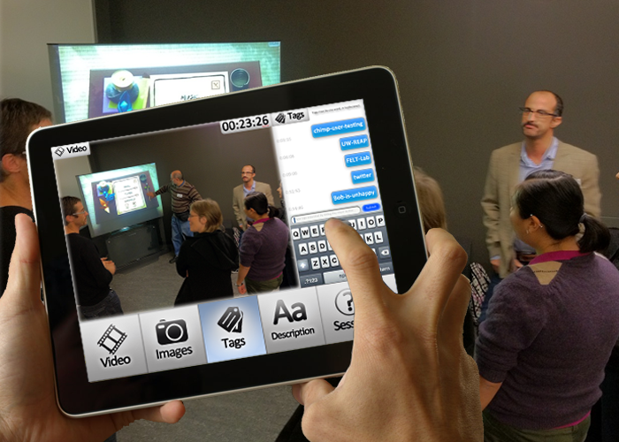

Project Highlights
- Allows users to snap a photo of a slide, a whiteboard, or a picture with the in-app camera during a presentation, and then tags the shot to a specific moment in the recording.
- Mastered’s short-note format allows for rapid and fluid addition of tags to recordings, so that users get a complete record of what happened during a class.
- Review mode allows users to sort their tags in different styles, so they can smoothly find the tags they need
- Project categories make organizing user notes simple and effortless
Full Project Description
Master[ed] began as an attempt to address one of the biggest issues in any creative work environment – capturing great ideas. Traditional forms of notation can be cumbersome when ideas are flying everywhere, and using multiple modes of input – text and audio – can greatly reduce ‘lost’ information. Master[ed] ensures that users never miss a detail. Mastered was designed, therefore, to be the easiest and most effective way for users to tag and annotate audio notes with short phrases or photos. The app was also meant to be used for interviews, meetings, and conferences..
Step 1
In the initial states of imagining Master[ed], we needed to determine what type of inputs to implement (for example: audio, video, text, images, doodles external files etc.). To accomplish this, we used divergent techniques (many of which resemble structured brain storming processes) to generate a list of potential inputs.
Step 2
When we began testing a quick and dirty prototype of the app, we quickly realized that some of the inputs that initially seemed as though they would be useful were actually hindrances to the user. For example, the first versions of Master[ed] allowed users to add text tags to video that would then be used by the user to review the video content. However, during user testing it became clear that having to hold the device perpendicular to the floor and type on it simultaneously was not ergonomic, and produced shaky video.
